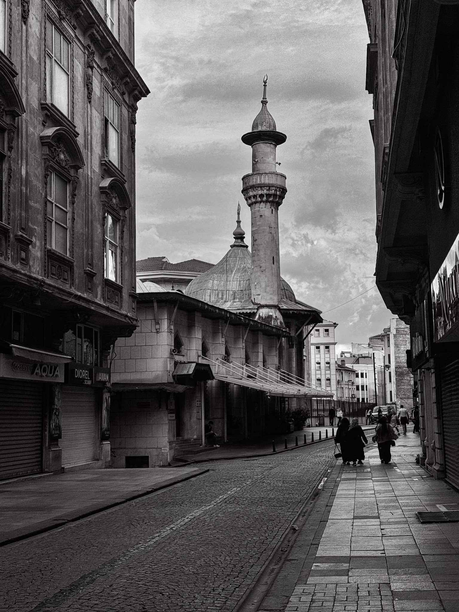

Şehrin Sessizliği

Arnavut taşların kapladığı ıssız bir sokak ve soğuk kaldırımların terk edilerek ıssızlaştırıldığı bir günün sabahında; insana yabancılaşmış evlerin eski zamanın izlerini saklayan kesme taşlarla örülmüş iki bina.
Aralarından süzülen dar gökyüzünde, ağır bulutların altında tek bir minare yükseliyor; şehrin bütün sessizliğini sırtlanmış gibi, dimdik ve yorgun. Kubbenin kurşun grisi, yılların yağmurunu içine çekmiş de geri vermeyi unutmuş. Kepenkleri inik dükkânlar nefesini tutmuş, tabelalar kimseye seslenmeden boşluğa bakıyor.
Uzakta, kaldırımın ışığa açılan ucunda birkaç siluet yürüyor; adımları taşa değiyor ama sesi yok sanki. Kimsenin acelesi yok, kimsenin kimseye söyleyecek sözü. Şehir, bir sabah vakti herkesin ortak kararıyla nefesini bırakmış gibi.
Burada zaman akmıyor, birikiyor. Sıvası dökülmüş her cephede geçmiş bir kalabalığın izi duruyor. Evler insana yabancılaşmış olabilir, ama insan da evlere yabancılaşmış; ikisi de birbirini bekliyor, ikisi de susuyor.